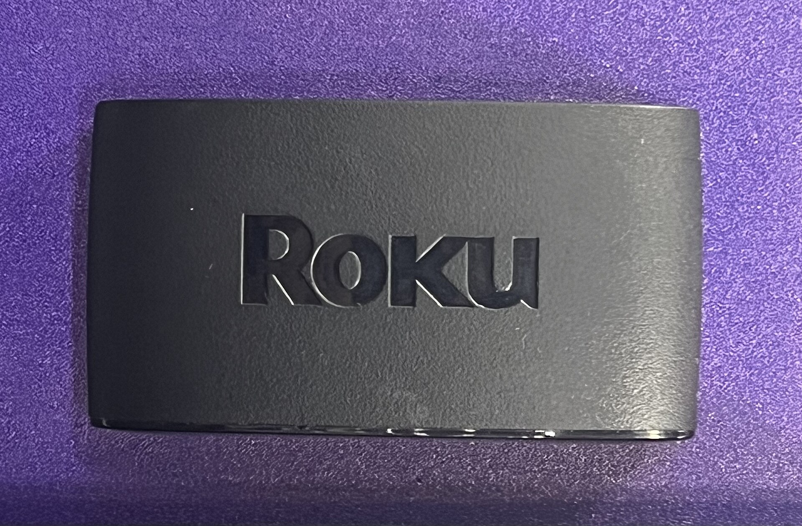
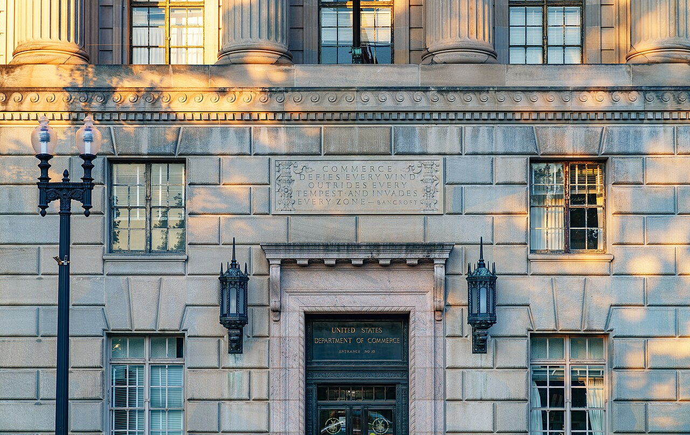
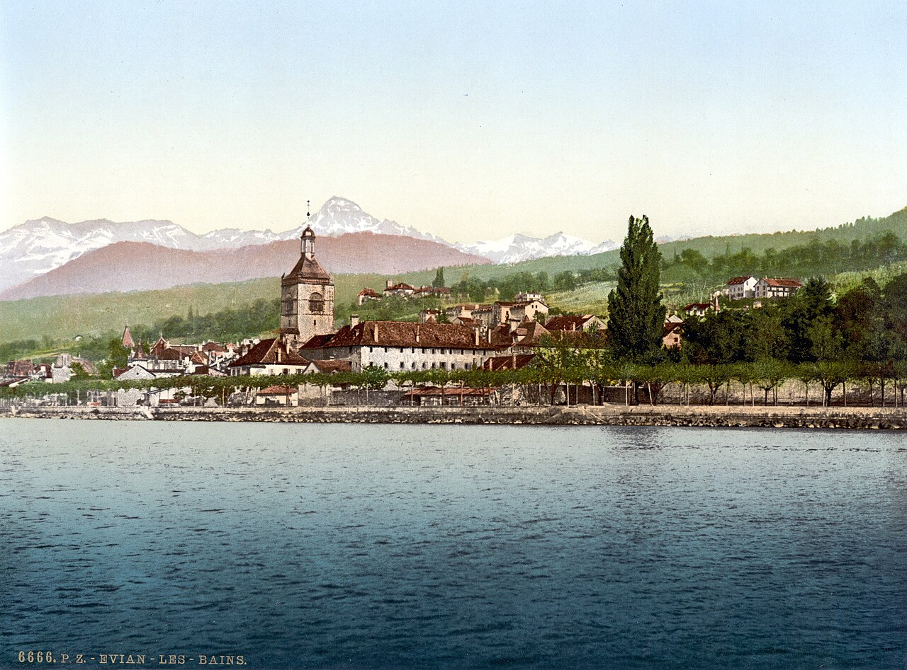
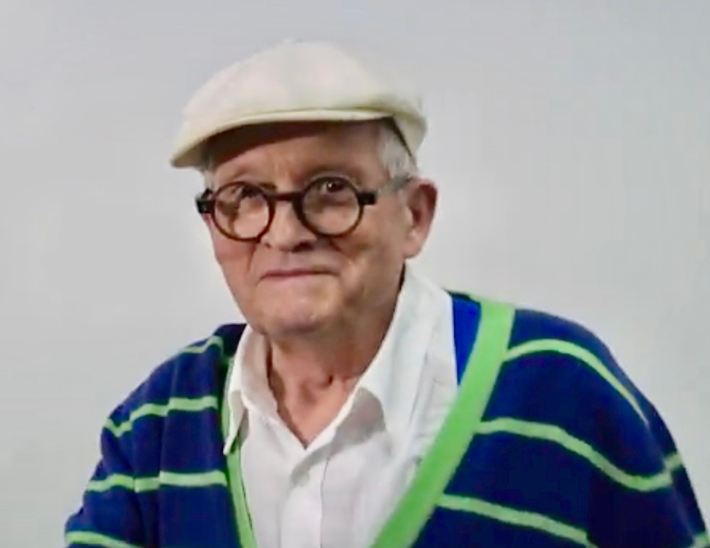

Vol. I · No. 29 · Tuesday, June 16, 2026 · 12 items · 7 sections · ~14 min read
A Tuesday written in deal terms: Fox buys back the screen it sold six years ago, the United States and Iran sign their war’s end in pixels before paper, and the most cash-rich company on earth goes to the bond market for twenty billion dollars.
The Splash · Entertainment & EASL · New York
Fox buys Roku for $22 billion, paying $160 a share for the platform it walked away from in 2020

Roku’s connected-TV hardware and operating system reach more than 100 million households, the distribution Fox is paying $22 billion to own. — Wikimedia Commons / CC BY-SA
Fox CorporationInstitutionThe Murdoch-controlled media company spun out of 21st Century Fox in 2019, holding Fox News, Fox Sports, the broadcast network, and the free streaming service Tubi. agreed on Monday, June 15, to acquire RokuInstitutionThe connected-TV company whose operating system powers many smart televisions and streaming sticks and which runs the ad-supported Roku Channel, reaching more than 100 million households. in a cash-and-stock deal valuing the company near $22 billion, or $160.00 a share, structured as $96.00 in cash plus 0.9693 shares of Fox Class A stock for each Roku share. The combination would become the third-largest U.S. television business by share of viewing. Fox shareholders would own roughly 73% of the combined entity and Roku holders about 27%, with the deal expected to close in the first half of 2027 pending shareholder and regulatory approval. Lachlan MurdochPersonExecutive chair and chief executive of Fox Corporation and eldest son of Rupert Murdoch; he called the Roku acquisition “a defining moment for FOX.”, Fox’s executive chair, called it “a defining moment for FOX.”
The logic is distribution. Fox would pair its live news, sports, and the free, ad-supported TubiInstitutionFox’s free ad-supported streaming television service, acquired in 2020 for $440 million and now central to its streaming strategy. service with Roku’s operating system, its first-party viewer data, and the Roku Channel, a single stack spanning content and the screen it plays on. The bet is on connected TVConceptTelevision watched over the internet through smart TVs and streaming devices; its precise audience targeting has made it the central battleground for advertising-supported streaming. advertising, where targeting and platform control increasingly decide the economics.
The sharpest detail is the round trip. Fox sold its stake in Roku at roughly $58 a share in 2020 to help fund its purchase of Tubi; six years later it is buying the entire company at $160. The reversal turns a clean strategic exit into a far more expensive strategic re-entry, a reminder that the platform a content owner can live without in one cycle becomes the platform it cannot live without in the next.
“Fox sold its Roku stake at fifty-eight dollars to build Tubi; six years on it is buying the whole company at one hundred sixty.”
— The Morning Brief, June 16
Why it mattersThis is a marquee media combination sitting exactly in the entertainment-law and capital-markets seam: a content-plus-distribution tie-up that draws antitrust scrutiny, the defining consolidation of the connected-TV ad war, and a near-perfect study in how a divestiture can boomerang back at triple the price.
The Front · The world · Washington & Tehran · LLLCR
The US and Iran sign their war-ending memorandum digitally; the formal ceremony still waits for Friday in Geneva
Vice President JD Vance said the United States and Iran had signed their war-ending memorandum of understandingConceptA signed but non-binding framework recording mutual intent; this one ends the blockade and opens a sixty-day negotiating window rather than settling the conflict outright. “digitally” on Monday, June 15. President Trump and Vance signed for Washington, and Iran’s parliament speaker, Mohammad Bagher GhalibafPersonSpeaker of Iran’s parliament and a former Revolutionary Guard commander, who signed the memorandum for Tehran., signed for Tehran. The document ends the U.S. naval blockade, reopens the Strait of HormuzPlaceThe narrow waterway between Iran and Oman through which roughly a fifth of the world’s seaborne oil passes; threatening to close it was Iran’s main leverage. toll-free, and opens sixty days of nuclear talks. Officials promised the full text within a day or two and “no side deals.”
The in-person ceremony is still set for Friday, June 19, in Geneva, mediated by Pakistan’s Shehbaz SharifPersonPrime Minister of Pakistan and the lead mediator of the deal, hosting Friday’s Geneva ceremony alongside Qatar. and Qatar. Israel says it will not be bound by the terms and intends to keep operating in Lebanon and Syria. Crude fell and global equities rallied on the news.
Why it mattersThis is the first actual signature on a four-month war, and the gap between a digital memorandum and a treaty signed in Geneva on Friday is precisely where the deal still lives or dies.
Framing noteThe right divides on the same terms: Fox News frames a Trump peace win, while National Review editors call the deal “discouraging” for leaving Iranian enrichment and the missile program intact; the center (NPR) leads with the caveats and Israel’s objections.
Nvidia returns to the bond market for $20 billion, its first debt sale in five years, into $85 billion of demand
Nvidia is raising $20 billion through a seven-part investment-gradeConceptA credit rating of BBB-/Baa3 or higher, signaling low default risk and giving an issuer access to the cheapest tier of corporate borrowing. bond with maturities stretching to 2056, according to a term sheet seen by Reuters. It is the chipmaker’s first bond since a $5 billion sale in June 2021. Investor demand reportedly reached about $85 billion, roughly four times the deal, an oversubscriptionConceptWhen orders exceed the bonds on offer, signaling strong demand and letting the issuer tighten pricing in its favor. that let the company tighten pricing across tranchesConceptThe separate portions of a single bond offering, each with its own maturity and coupon, used to target different investor appetites.. Goldman Sachs, JPMorgan, and Morgan Stanley are bookrunning; proceeds are for general corporate purposes and refinancing.
The question is why the most cash-rich company on earth is borrowing at all. The answer is the scale of the artificial-intelligence buildout: even Nvidia, awash in profit from selling the chips, is funding its expansion with leverage. JPMorgan projects more than $300 billion of AI and data-center-related debt issuance in 2026, and Nvidia’s return sets the template the rest of the sector will follow.
Why it mattersWhen the company minting money on AI demand still taps the bond market, it signals capital spending so large that even the strongest balance sheet reaches for debt, and it opens the financing playbook every AI-adjacent issuer will now run.
Capability, the labs, and the law racing to catch them.
Artificial intelligence · Washington
Anthropic’s engineers meet Commerce officials to lift the Fable 5 ban; the two sides leave still split

The Herbert C. Hoover Building, home of the Commerce Department, whose export-control directive pulled two Anthropic models offline worldwide. — Wikimedia Commons / public domain
Senior Anthropic technical staff met Trump administration and Commerce Department officials in Washington on Monday, June 15, to try to reverse the June 12 export-control directiveConceptA Commerce Department order, run through its Bureau of Industry and Security, restricting sensitive technology to foreign persons on national-security grounds; here it reached past chips to a finished software model. that forced Claude Fable 5 and Mythos 5ConceptAnthropic’s most capable model class; Fable 5 is the public, safety-gated version of the restricted Mythos 5, both taken offline globally after the directive. offline for every customer worldwide. The two sides left without a resolution, still split on the risk the model presents. Anthropic characterizes the episode as “a misunderstanding” and says it is working to restore access as soon as possible.
The administration’s account is harsher. AI and crypto czar David SacksPersonThe venture capitalist serving as the White House’s AI and crypto czar, who said publicly that Anthropic refused to fix the Fable 5 jailbreak before the controls landed. said Anthropic had refused to fix the underlying jailbreakConceptA prompt technique that bypasses a model’s safety guardrails; Anthropic argues the flagged exploit is present in rival systems too, making the recall disproportionate. before controls were imposed, and a senior official told Fox Business that the company’s “recklessness” triggered them. The standoff lands atop Anthropic’s existing lawsuit over a March supply-chain designation, a warning from its finance chief that blacklisting could cost “multiple billions” in revenue, and a confidential public-offering process now weeks old.
Why it mattersThe first federal recall of a deployed frontier model is now a live negotiation rather than a one-off order, and how it resolves will write the template for how Washington, prompted by a rival’s complaint, can pull a model into export-control law.
Capital markets, the Fed, and the money behind the money.
Markets & deals · The Woodlands, Texas
Olin and Huntsman agree to merge as equals, creating a $12.5 billion North American chemicals leader
An all-stock merger of equals: two chemicals makers combining under a single name and a split board. — The Morning Brief
Olin and Huntsman agreed to combine in an all-stock merger of equalsConceptA combination structured so neither side is the nominal acquirer, typically all-stock with split governance and a blended name, though one side usually ends up in control., announced before the market opened on June 16, creating a company with pro forma 2025 revenue of about $12.5 billion. The exchange ratioConceptThe number of acquirer shares each target shareholder receives in a stock deal, fixing the relative valuation of the two companies. gives Huntsman holders 0.5476 Olin shares each, leaving Olin shareholders with roughly 54.5% of the combined “OlinHuntsman” and Huntsman holders about 45.5%. Olin chief executive Ken Lane would run the company, Peter Huntsman would become non-executive chairman, and the headquarters would sit in The Woodlands, TexasPlaceA master-planned community north of Houston that hosts numerous energy and chemicals corporate headquarters..
The deal targets more than $400 million in synergiesConceptProjected cost savings or revenue gains from combining two firms, the central justification, and frequent overestimate, in merger announcements. plus about $125 million in cash tax benefits, most within three years, and is pitched as a way for U.S. chemicals to compete against Chinese overcapacity rather than against each other. Olin rose roughly 6.7% before the open; the companies expect to close in the first half of 2027.
Why it mattersThis is a textbook merger-of-equals structure, split governance and a fixed exchange ratio, the kind of deal a capital-markets associate lives inside, and whether the “equals” framing survives integration is the question that always follows.
The Dow closes at a record as the peace tape rolls into Warsh’s first Fed meeting
U.S. stocks finished Monday at the highs. The Dow gained 468.77 points, or 0.92%, to a record 51,671.03; the S&P 500 rose 1.65% to 7,554.29; and the Nasdaq added 3.07% to 26,683.94. The rally tracked the Iran framework and the prospect of a reopened Strait of Hormuz, which drove crude lower and pulled the 10-year Treasury yield to about 4.43%, a one-month low. SpaceX extended its post-listing run.
The record sets up the FOMCInstitutionThe Federal Open Market Committee, the Federal Reserve’s rate-setting body, which meets eight times a year to set the federal funds target. meeting on June 16 and 17, the first chaired by Kevin WarshPersonFormer Fed governor and longtime monetary hawk, sworn in as chair on May 22, 2026, succeeding Jerome Powell.. A hold is priced at better than 98% odds; the live question is whether the committee erases its last projected 2026 cut from the dot plotConceptThe chart on which each Fed official anonymously marks an expected rate path; markets read it for the committee’s collective trajectory.. Cooling oil hands the new chair an easier inflation backdrop.
Why it mattersThis is the macro backdrop every deal model rests on, and a record high printing the day before a hawkish new chair’s first decision is the exact tension the rest of the week will trade around.
The Supreme Court, the rulings that move markets, and the business of the profession.
Law & the courts · Washington
The Supreme Court takes up six-person juries and prolonged immigration detention, and turns away Carter Page’s suit against Comey
The Court’s June 15 order list added three cases for next term and cleared a docket of high-profile denials. — Wikimedia Commons / CC BY-SA
The Supreme Court’s June 15 order list granted three new cases for the next term. In Kian v. Florida, the justices will weigh whether the Sixth Amendment permits six-person juries, with the petitioner asking them to overrule Williams v. FloridaConceptThe 1970 decision holding that six-person juries are constitutional; Kian asks the Court to overrule it in light of the 2020 unanimous-jury ruling in Ramos v. Louisiana. (1970) in light of Ramos v. Louisiana (2020). Genalo v. Black asks whether prolonged immigration detention triggers a right to a bond hearing on a clear-and-convincing-evidence standard, and Guerrero v. Johnson takes a successive-habeas intellectual-disability question in a Texas capital case. Argument comes next term.
The denials drew the attention. The Court declined to hear Page v. Comey, Carter Page’s surveillance suit against the former FBI director, on statute-of-limitations grounds, with Justice Jackson recused. It also passed on Pauline Newman’sPersonThe 98-year-old Reagan-appointed judge of the Federal Circuit, suspended from new cases since 2023 after she declined cognitive testing; the denial leaves her suspension in place. challenge to her suspension from the Federal CircuitInstitutionThe U.S. Court of Appeals for the Federal Circuit, the appeals court with nationwide jurisdiction over patent cases., leaving it intact. Justice Alito dissented from two cert denialsConceptThe Court’s refusal to hear a case, which leaves the lower-court ruling standing and sets no national precedent., in a student-speech case and a capital case.
Why it mattersThe six-person-jury grant is a live originalism test with real criminal-procedure stakes, and the Newman denial lets a court discipline a sitting judge without Article III review, a quiet but consequential marker for judicial independence.
Consequential developments, and how the spectrum frames them.
The world · Évian-les-Bains, France · LLC
The G7 opens at Évian with allies pressing Trump to keep Ukraine on the agenda

Évian-les-Bains, the French spa town on Lake Geneva hosting the 52nd G7 summit. — Wikimedia Commons / CC BY-SA
The 52nd G7InstitutionThe group of seven major advanced economies, the U.S., U.K., France, Germany, Italy, Japan, and Canada, plus the EU; an informal forum rather than a treaty body. summit opened June 15 in Évian-les-BainsPlaceA French spa town on the south shore of Lake Geneva, near the Swiss border, hosting the summit through June 17., hosted by President Emmanuel MacronPersonPresident of France and the summit host, pressing Washington to sustain support for Ukraine as U.S. aid has narrowed.. It is the first in-person G7 since the Iran war began, with outreach guests from Kenya, India, Brazil, Egypt, and South Korea. Volodymyr Zelensky joined on Tuesday, June 16.
The leaders agreed a common position to bolster Ukraine’s air defenses, with France and its European partners now Kyiv’s largest backers after U.S. cutbacks. Trump pledged further support, urged Moscow to “make a deal,” and called the 2014 expulsion of Russia from the G8 “a mistake.”
Why it mattersWith the Middle East war winding down, the summit is the test of whether Trump re-engages on Ukraine, and the answer shapes Europe’s defense budgets and the war’s trajectory.
A Russian barrage sets fire to Kyiv’s Lavra, and the Dormition Cathedral burns again
A Russian missile-and-drone barrage overnight June 14 into 15 ignited the roof of the Dormition CathedralInstitutionThe main church of the Kyiv-Pechersk Lavra, destroyed in World War II and rebuilt by 2000, now fire-damaged again. at the 11th-century, UNESCO-listed Kyiv-Pechersk LavraPlaceAn 11th-century Orthodox cave monastery in Kyiv and a UNESCO World Heritage Site, among the holiest sites in Eastern Christianity.; staff evacuated icons and liturgical items. Ukraine’s air force reported about 70 missiles and 611 Shahed dronesConceptIranian-designed loitering attack drones, produced in Russia as the “Geran,” used en masse in saturation barrages. launched nationwide, most intercepted, with impacts at roughly 42 sites. At least five were killed in Kyiv and about 140,000 residents lost power.
Zelensky called the strike “one of Russia’s most serious crimes against Christian culture to date,” and UNESCO condemned it. Moscow, through state media, denied responsibility and blamed a malfunctioning U.S.-supplied Patriot interceptor for the cathedral fire.
Why it mattersStriking a UNESCO Orthodox shrine pulls heritage and religion into the war’s information fight, and the Patriot-malfunction counterclaim is the kind of attribution dispute that now trails every strike.
Film, TV, games, music, and the business and law of the show.
Entertainment & EASL · Redmond
Xbox studios brace for closure as Ninja Theory, Double Fine, and Compulsion negotiate to break away
Several studios inside Microsoft’s Xbox division are negotiating independence ahead of expected cuts. — Wikimedia Commons / Microsoft
Jason SchreierPersonThe Bloomberg reporter and the games industry’s most authoritative source on studio internals, layoffs, and corporate restructuring. reported June 15 that several Xbox Game Studios are in active spin-offConceptThe separation of a subsidiary into an independent company; here, studios negotiating to buy back their independence from a parent that wants out. talks to avoid closure, including Compulsion Games (South of Midnight), Double Fine (Psychonauts 2), and Ninja TheoryInstitutionThe Cambridge, U.K. studio behind the Hellblade/Senua franchise, acquired by Microsoft in 2018. (Hellblade). Microsoft is expected to announce significant gaming cuts shortly after its fiscal year ends June 30, with new Xbox chief Asha SharmaPersonThe new Xbox CEO overseeing the restructuring of Microsoft’s gaming division amid pressure on its margins. driving the restructuring.
Even studios that buy their freedom expect layoffs. The dissonance is sharp: Ninja Theory unveiled a brand-new Senua game at the Xbox showcase only the week before, even as closure loomed. It is the clearest sign yet of the unwind of the Activision-era acquisition spree that made Microsoft the biggest owner of game studios on earth.
Why it mattersThis is a live case in intellectual-property ownership and studio M&A, who keeps the franchise, who carries the liabilities, what a spin-off looks like when the parent wants out, layered over the labor story now defining the games business.
Utah becomes the first college athletic department to take private-equity money
The University of Utah finalized the first direct private-equityConceptInvestment firms that buy ownership stakes, here in a school’s commercial rights, to grow their value and sell at a profit, typically within several years. investment into a major college athletic department, a deal detailed by Sportico on June 15. Otro CapitalInstitutionA New York private-equity firm, the first to invest directly in a major college athletic department. is committing at least $100 million up front, with reports of up to $500 million over time, into a new for-profit entity, Crimson Brand PartnersInstitutionThe new for-profit company housing Utah Athletics’ commercial operations, controlled in partnership with Otro Capital., which will control branding, sponsorships, licensing, ticketing, and media. The university keeps coaching, recruiting, athlete support, and its facilities.
The structure carves the commercial rights into a joint venture; Otro, led by Matt Webb, is expected to exit in five to seven years. It lands squarely in the post-House settlementConceptThe 2025 antitrust settlement that cleared schools to pay athletes directly, accelerating the commercialization of college sports., post-NIL era in which college athletics is being treated, openly, as an asset class.
Why it mattersThis is the clearest sign yet that private capital is buying into college sports, and the structure, commercial rights carved into a for-profit joint venture, is the template the rest of the power conferences will study.
A death, a book, an argument, the life of the mind.
Ideas · London
David Hockney, who painted California’s light and never stopped reinventing his medium, dies at 88

David Hockney in 2017. Across seven decades he moved from pop art to the iPad without losing the hand. — Wikimedia Commons / CC BY-SA
David Hockney, the most celebrated and most popular British painter of his generation, died June 11 at his home in London, a month short of his 89th birthday. Born in Bradford in 1937, he moved across seven decades through pop artConceptThe mid-century movement drawing on commercial and popular imagery; Hockney emerged from its British wing at the Royal College of Art., classical portraiture, landscape, and photo-collage, best known for the Los Angeles swimming-pool paintings and above all A Bigger SplashConceptHockney’s 1967 acrylic of a diving-board splash against a flat California house, his signature image and a defining work of British pop art. (1967).
He never stopped changing tools. Late in life he set down the brush for the iPad, producing the Normandy spring drawings of the 2020 lockdown under the line “Do remember they can’t cancel the spring.” He is survived by his partner, Jean-Pierre Gonçalves de Lima; a major retrospective ran at the Fondation Louis VuittonInstitutionThe Frank Gehry-designed art museum in Paris, funded by LVMH, which mounted a major Hockney retrospective opening in 2025. in Paris.
Why it mattersHockney was the rare serious artist who was also genuinely popular, and his late embrace of the iPad is the example worth keeping: a master can take up a new tool without losing the hand that made him.